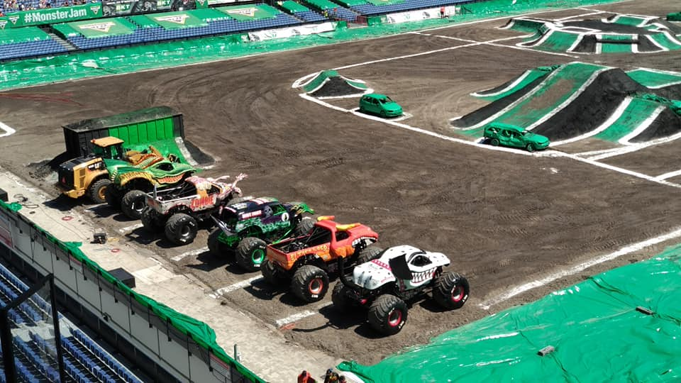

I've been to a lot of museums with my parents and grandparents over the years, I personally enjoy the museums where you can do something more then the museums where you just look at art.
I also went to the bloemencorso a couple of years with my parents, this was very interesting because they manage to make carnaval like floats almost completely out of fresh flowers
My dad and I also went to Monster Jam in de kuip 2 times which is still one of the only reasons you can get me to a football stadium willingly.
I really enjoyed this and think it is very cool to see what you can do if you have time to over engineer a truck
We also went to a festival called Fête du Babau in France which is a festival about a dragon in a river who eats children who swim after 18:00
All of these things have to do with culture because they can teach about a certain area, time period or tradition.